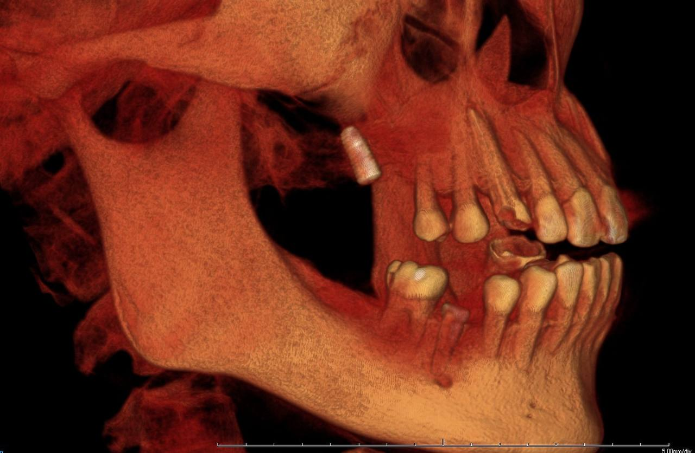

每�??��?例都?�信任�?託�??��??�以專業?�術�?細�??�護，為?��??�治?��?每�?步�?/p>
??��右上第一大臼齒長?�缺?��?齒槽骨吸?��?上�?竇氣?��?殘�?骨�?度極?��??�。採?�微?�內?��?顎�?增�?術�?Internal Sinus Lift）�??��?護�?顎�??��??�性�??��?下�?精�??��?竇�?並�??�骨粉�??��?完�?植�?植入??

??���?顎左?�第二大?��??��?缺�?，骨?��?顯�?足。透�?微創?��?式�?顎�??��?術�??�單一小傷??��完�?補骨?��??��?
完整案�?紀?��???張臨床�??�。客製�??�台設�?，精準符?�患?�咬?��?求�?
完整案�?紀?��???張臨床�??�。�??�修復治?��?保�??��??��???
?��??��? 30+ 案�??��??��?/p> ?��?諮詢了解?��?
每個�?例都?��??��?，�??�們為?��?身�?估�??��??�治?��??��?/p>